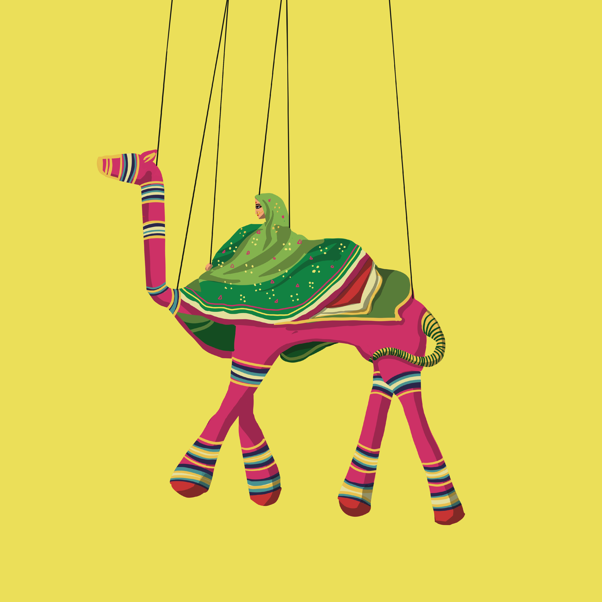

An initiative of National Institute of Fashion Technology with the active
support from the Ministry of Textiles, Office of Development Commissioner
(Handlooms) and Office of Development Commissioner (Handicrafts) which
aims to provide an opportunity for creative innovation and
experimentation, reaching out to the artisans and craftsmen at the grass
root level. The artisans and craftsmen involved in the initiative will
benefit through knowledge dissemination and exposure to new media.
Craft
Rajasthan is known for colour, crafts and its many performing arts
nurtured in its desert landscape. One of these is the Kathputli ka
Khel, a unique combination of local legends and crafts that come
together in stunning performances mounted by puppeteers.
Kathputli is a join of two rajasthani language words Kath meaning wood
and Putli meaning a doll. Kathputli means a puppet which is made
entirely from wood. Kathputli is a string puppet theatre, native to
Rajasthan, India, and is the most popular form of Indian puppetry.
Being a string marionette, it is controlled by a single string that
passes it from the top of the puppet over the puppeteers also known by
the name of the "kathputliwalas".
While the art form is now referred to as a tourist attraction, in the
past it wasn't just limited to the courts of the king; they were also
performed in the town square.
The puppeteers have been assisting their families in the making
process since their childhood. Each family member has a vital role in
the process; the Kathputlis are a collective effort of the entire
family. Men and women take up roles that complement one another.
Tools and Process
Basola (Hammer)
Chorsi (Chisel)
Sui (Needle)
Sewing Machine
Scissor
Aari (Hand Saw)
Koochi (Brush)
Paint Brush
Whet Stone
The making process can be categories into following steps:
Making of the Face: Different characters
have different facial structure and expression and are carved accordingly.
This process is mainly done by the men and is called Chilaai. Craftsmen,
with the help of chisel and hammer, painstakingly carve the
face.Generally, there is no difference in the face of the male and that of
the female puppets. The puppets have no wooden hands and legs and these
are made in cloth.
Finishing: Thereafter it is rubbed with the
help of sandpaper and then a coat of Plaster of Paris mixed with
turpentine oil is applied on the surface of the face to fill the small
holes on wood. Once it is dried it is again rubbed with sandpaper to
remove the extra material and then touch wood is applied as the basic
paint with the help of koochi and the face is kept for drying.
Colouring: The dried face is finally coated
with a pale white colour matching to the skin colour. The eyes are painted
white, lips in red colour and puppets depicting females are painted with
red bindi on the forehead. • Stitching: The decoration starts with
preparing the clothes. These are hand stitched and stuffed with old
clothes and rags. This is done mainly by the women. Male and females are
dressed with dhoti and lehenga respectively made out of similar sarees.
The garments are designed to resemble the mediaeval Rajasthani attire.
Decoration: Heavy embellishment is done on
the puppets which are meant for performance. They are decorated with
handmade jewellery, instruments etc. to make them appear lively. These
puppets are mainly sold as souvenirs and for this reason the female
puppets have traditional gorla on their foreheads while the males have
beens (Snake Charmer's Flute) which depict the culture of Rajasthan.
Attaching of the Strings: Attaching strings
become the most important element of the puppets. Artisans use these
strings to manipulate the puppets during performances. Proper location of
the string is necessary for better manoeuvring of the puppet’s actions.
Strings are mainly attached to the neck, shoulders, hands, legs and head
of the puppet. These strings are either looped with the fingers of the
puppeteer or to a small wooden strip which is operated by the lead
puppeteer. The string attached to the head also connects to the back.
These strings are strong cotton threads which can bear the load of the
puppets. Finally, the highly decorative and beautiful puppets are ready to
perform on different traditional and contemporary themes.
STORIES & MUSIC
The natives of Rajasthan still look at Maharana Pratap with great
respect and admiration, and honour him by telling tales of his bravery
through various mediums. The reason for this admiration and unfaltering
loyalty that exists till date is given in the stories recited by the
puppeteers. The story is a must have in the portfolio of every puppeteer
and each one has their own variation.
The principal theme of a kathputli performance relates the story of
Rajasthani hero Amar Singh Rathore, a Rajput prince of the Nagaur
kingdom who lived during the reign of the 17th century Mughal (Mogul)
emperor Shah Jahan. It evokes the life and exploits of Amar Singh
Rathore in the Mughal court, a life that ended with his treacherous
death at the hands of a jealous courtier.
However, the themes of the shows also include: romance, drama, comedy,
etc. A few shows are known for their unique characters instead of the
storyline itself. These characters are: the Magician who can detach his
head from the rest of his body, Anarkali, the snake charmer, Mikael
Jackson from pop culture who can also do his signature “moon walk” on
the stage, and many more.

They adopted many social issues as the theme of the story like dowry
issues, the stifle between Nanad and Bhabhi, Saas and Bahu, etc
Today with the change in time, new themes are introduced to uplift this
dying art. The Kathputli puppets help in creating awareness for Polio,
AIDS, Child Marriages, Dowry and many other social evils.